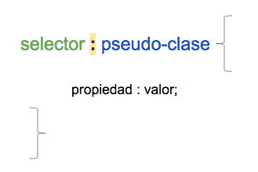

Pseudo-clases
En el curso anterior aprendimos sobre las clases (class). Por si no te acordás, las clases son selectores múy útiles para agrupar elementos y añadir el mismo estilo a ese grupo de elementos.
En el archivo HTML, una clase se agrega dentro de la etiqueta de apertura. Si vemos el archivo HTML de cualquier sitio web podremos identificar exactamente donde se encuentran las clases.
Soy un div con una clase!Existen otros tipos de selectores llamados pseudo-clases. Pero a diferencia de las clases, las pseudo-clases no aparecen en el archivo HTML. Las pseudo-clases se escriben directamente en el archivo CSS y se utilizan para estilizar un estado especial de un elemento.
La manera de definir una pseudo-clase es agregando dos puntos y el nombre de la pseudo-clase al elemento que se quiere modificar. Ejemplo:
Existen varias pseudo-clases pero nosotros nos enfocaremos sólo en las más comunes.
Algunas de las pseudo-clases más conocidas modifican los enlances o links. Estas pseudo-clases pueden modificar la apariencia de los links cuando estos son visitados o cuando aún no son visitados, es decir cuando todavía no se hizo click sobre ellos. También se puede cambiar el aspecto de los links cuando el cursor se encuentra sobre ellos o al hacer click y activarlos.
Esto se logra a través de las pseudo-clases dinámicas llamadas link, visited, hover y active. Estas pseudo-clases se agregan a los links para lograr diferentes efectos.
Fijate en el siguiente ejemplo, luego pon tu cursor encima del link. Por último haz click en el link:
See the Pen QgeZRp by eku (@eku) on CodePen.
¿Te diste cuenta como el color del link cambió de azul a rojo al hacer click sobre él?
Ten en cuenta el orden correcto en el que se utilizan las pseudo-clases en este caso. 'Link' siempre va primero, seguido de 'visited', 'hover' y por último 'active'.
Las pseudo-clases 'hover' y 'active' también se utilizan con otros selectores que no sean links. Fijate en el siguiente ejemplo, y luego pon tu cursor encima del div.
See the Pen dRxQox by eku (@eku) on CodePen.
¿Te diste cuenta de lo que pasó? Al poner tu cursor encima del div, no solo cambió de color, sino también de tamaño. Ahora fijate en el CSS. El div tiene un estilo inicial que luego cambia gracias a la pseudo-clase 'hover'.
Además de las pseudo-clases dinámicas que vimos recién, existen otros tipo de pseudo-clases llamadas estructurales. Algunas de ellas son: 'first-child' 'last-child' y 'nth-child()'
Es importante saber que los elementos HTML están estructurados de forma jerárquica. Es decir, los elementos de HTML pueden ser padres (parents), hijos (children) y/o hermanos (siblings). Por ejemplo, fijate la siguiente lista desordenada:
- Primer hijo
- Segundo hijo
- Tercer hijo
- Ultimo hijo
El elemento ul es el padre de los elementos li. Al mismo tiempo los elementos li son hermanos entre ellos e hijos del elemento ul.
Ahora, volvamos a nuestras pseudo-clases. Si queremos aplicar la pseudo-clase 'first-child' para modificar el estilo de la lista de nuestro ejemplo, ¿qué elemento te parece que modificaría esa pseudo-clase? ¿y la pseudo-clase 'last-child'?
Fijate en el editor para ver la respuesta:
See the Pen dRxrJo by eku (@eku) on CodePen.
Ahora es tu turno de jugar con las pseudo-clases. En el editor, agregá diferentes tamaños de letra a cada uno de los items de la lista de manera que la lista esté ordenada de menor a mayor. Luego haz que el primer item de la lista sea color rojo y el último item de la lista sea color azul.
See the Pen gRVEKm by eku (@eku) on CodePen.
En el siguiente ejercicio cambiá el color y tamaño del circulo al poner el cursor encima.
See the Pen zdOqdE by eku (@eku) on CodePen.
Transiciones
Las transiciones nos permiten cambiar ciertas propiedades de CSS de una forma gradual en un periodo determinado.
En el ejercicio anterior vimos que al poner el cursor encima del div, este cambia de color y tamaño inmediatamente. El cambio se realiza de una manera brusca. Sin embargo, las transiciones nos ayudan a suavizar esos cambios de manera que la animación sea mucho más elegante.
Fijate en los dos cuadrados que aparecen en el editor. Al poner el cursor encima del cuadrado al que no se le aplica la transición, podrás ver que el cambio de las propiedades es instantáneo. Sin embargo, al poner el cursor encima del cuadrado al cual sí se le aplica la transición, podrás notar que el cambio de propiedad es mucho más sutil.
See the Pen RgzBqZ by eku (@eku) on CodePen.
En el ejemplo de arriba, vimos como gracias a las transiciones se puede cambiar el ancho del elemento de 150px a 300px de una manera lineal en 2 segundos.
Ahora veamos como se forma una transición.
Las transiciones requieren varios parámetros. Estos son:
Transition-property (nombre de la propiedad): este parámetro especifica el nombre o los nombres de las propiedades que se quieren cambiar y a los cuales se les debe aplicar la transición.
Transition-duration:(duración) este parámetro especifica la duración que debe tener la transición.
Transition-timing-function:(tipo de función) este parámetro especifica la velocidad de la transición.
Transition-delay:(retraso) este parámetro especifica el tiempo de espera antes de que comience la transición.
La siguiente linea nos muestra como declarar una transición en CSS
.ejemplo {
transition: [propiedad] [duración] [tipo de función] [retraso]
}
Veamos que significa cada parámetro:
1) El nombre de la propiedad puede ser 'background-color', 'height', 'width' o cualquier otro, sólo depende de que propiedad te gustaría cambiar. También como nombre de propiedad se puede escribir simplemente all que significa todo. Esto es muy útil en el caso de que tengas que cambiar varias propiedades a la misma vez.
2) En cuanto a la duración, esto se escribe en segundos o milisegundos.
3) Otro parámetro que es importante aclarar es el tipo de función. Existen varios tipos de función.
Ejemplo:
Linear: la velocidad del cambio es constante. Es decir, es la misma velocidad de principio a fin.
Ease: este tipo de función es el default. Es decir, que si no le agregás el tipo de función, la transición se hará utilizando ease. Esto quiere decir que el cambio tendrá un comienzo lento, luego rápido, y por último lento nuevamente.
Ease-in: la velocidad de cambio comienza lenta y luego se mantiene constante.
Ease-out: La velocidad es constante y el final es lento.
Ease-in-out: la velocidad es lenta al comienzo y al final.
4) El último parámetro, retraso, es opcional.
Fijate en el ejemplo de abajo. El parámetro del retraso no está declarado, pero si el de la propiedad (all), la duración (.5s) y el tipo de función (ease-in-out).
.button {
transition: all .5s ease-in-out;
}
En el editor tenemos tres divs pero sólo el primero tiene una transición. Pon tu cursor sobre el primer div para ver que pasa.
¿Te diste cuenta de que el cambio ocurre de una manera sutil? Eso pasa por que definimos el tiempo de la transición en 0.5 segundos. Es decir que la animación no ocurre inmediatamente sino que dentro del periodo de tiempo especificado.
Agregá transiciones a los siguientes dos divs. Juega con todos los parámetros que aprendiste en la clase.
No te olvides de agregar las propiedades que quieres cambiar al hacer hover o poner tu cursor sobre la imagen.
See the Pen YxKOzW by eku (@eku) on CodePen.
Bonus!
Ahora veamos ejemplos de otras posibilidades más elaboradas donde podemos usar transiciones:
Ejemplo 1: Aparición de letras aleatoriamente
Una de las herramientas más poderosas que tenemos a nuestra disposición es transition-delay. Nos permite retrasar el comienzo de la transición. En este primer ejemplo, vemos la combinación de utilizar la propiedad opacity y poder darle una animación utilizando transition-delay a cada una de las letras y así poder crear un efecto que sea sutil y atractivo. Pon tu cursor encima de la imagen para ver la animación. Luego haz click en 'CSS' para ver el código.
See the Pen bRPxJG by eku (@eku) on CodePen.
Ejemplo 2: Múltiples transiciones y delays:
Las transiciones en CSS realmente destacan cuando las combinas. En este ejemplo, vamos a especificar dos transiciones, la primera es transform y la segunda es opacity. Ambas se escriben en la misma declaración de transition, separadas por comas. Fijate en el ejemplo del editor. Pon el cursor encima de la imagen para ver la animación.
See the Pen VWJEPR by eku (@eku) on CodePen.
Ejemplo 3: Animaciones 3D
Así también podemos utilizar las transiciones de CSS para poder dar un efecto 3D
See the Pen MoMPEE by eku (@eku) on CodePen.
Estos son solo unos ejemplos de toda las animaciones que puedes crear con CSS. La combinación de diferentes propiedades como colores, gradientes, tamaños, posiciones, orientación, etc; todas estas simultaneamente también. También puedes utilizar los delays para crear tus propias funciones.
Ahora, practiquemos un poco. Adiciona 2 segundos de efecto de transición al efecto de cambio del ancho del cuadrado. Luego, haz click en 'Result' para ver el resultado.
See the Pen dRBgdL by eku (@eku) on CodePen.
En el siguiente ejercicio, especifica la transición del div a que sea transition-delay de 0.5 segundos para que así la animación comience con 0.5 segundos de retraso. Por último, haz click en 'Result'para ver el resultado.
Las animaciones en CSS permiten que un elemento cambie gradualmente de un estilo a otro. Uno puede cambiar diferentes propiedades del CSS cuantas veces se quiera.
Para usar animaciones, primero se necesita especificar algunas @keyframes. Las @keyframes son los que guardan que estilo de elemento va a tener.
Cual es la diferencia entre animaciones y transiciones en CSS?
Si es que uno quiere utilizar CSS para poder brindar una animación donde no se especifique cuando comienza y termina la animación, o si es que se necesita más control sobre la transición, entonces necesitas usar animación @keyframe. Usando keyframes, uno define la animación y la describe especificando ciertas propiedades las cuales necesitan actuar durante el proceso de la animación. En el siguiente ejemplo puedes ver como es la declaración básica y el uso de @keyframes
@keyframes NOMBRE-DE-TU-ANIMACION {
0% { opacity: 0; }
100% { opacity: 1; }
}
#EJEMPLO {
-webkit-animation: NOMBRE-DE-TU-ANIMACION 5s infinite; /* Safari 4+ */
-moz-animation: NOMBRE-DE-TU-ANIMACION 5s infinite; /* Fx 5+ */
-o-animation: NOMBRE-DE-TU-ANIMACION 5s infinite; /* Opera 12+ */
animation: NOMBRE-DE-TU-ANIMACION 5s infinite; /* IE 10+, Fx 29+ */
}
Cuando uno especifica con el estilo que uno quiere dentro de @keyframes, la animación gradualmente cambia de un estilo a otro en un tiempo al cual se ha especificado. Para que la animación funcione, uno debe conectar la animación a un elemento específico. Aquí podrás ver un ejemplo donde conectamos la animación llamada "Ejemplo" a un elemento div a través de un Id, en este ejercicio puedes ver que la animación dura 5 segundos, y vemos que durante este tiempo el color del fondo del bloque div cambia de azul a rojo
See the Pen awgRrX by eku (@eku) on CodePen.
Ejemplo 1: Animaciones de cambio de fondo
/* El código de la animación */
@keyframes ejemplo {
from {background-color: blue;}
to {background-color: red;}
}
/* El elemento al cual aplicamos la animación*/
div {
width: 100px;
height: 100px;
background-color: blue;
animation-name: ejemplo;
animation-duration: 5s;
}
Ojo: Cuando la animación termina, el color cambia al estilo original.
Ejemplo 2: Animaciones de cambio de fondo y posición
See the Pen vZqQBN by eku (@eku) on CodePen.
Ejemplo 3: Animaciones especificando el número de veces de la animación
La propiedad animation-iteration-count especifica el número de veces que la animación ocurre. En el siguiente ejemplo veremos que la animación sucede 3 veces
See the Pen JJQeoQ by eku (@eku) on CodePen.
Ejemplo 4: Animaciones utilizando animation-delay
La propiedad animation-delay especifica un retraso para empezar la animación. El siguiente ejemplo da 2 segundos de retraso antes de que comience la animación.
See the Pen NgZENw by eku (@eku) on CodePen.
Ejemplo 5: Animaciones en sentido inverso o ciclos alternativos
La propiedad animation-direction es usada para poder hacer que la animación suceda en dirección inversa o ciclos alternativos.
En el siguiente ejemplo se puede ver la animación en dirección inversa:
See the Pen dRBQpY by eku (@eku) on CodePen.
En este otro ejemplo veremos la animación con ciclos alternativos:
See the Pen yXdQVx by eku (@eku) on CodePen.
Abreviatura
En el siguiente ejemplo vemos que la animación usa 6 propiedades:
See the Pen vZqQmX by eku (@eku) on CodePen.
div {
animation-name: example;
animation-duration: 5s;
animation-timing-function: linear;
animation-delay: 2s;
animation-iteration-count: infinite;
animation-direction: alternate;
}
El mismo resultado podemos obtener usando la siguiente abreviatura:
div {
animation: example 5s linear 2s infinite alternate;
}Ahora fijate en el ejemplo del editor.
Ejercicio 1: Practiquemos un poco. En el editor, adiciona 2 segundos de animación al elemento div, el cual cambia de color de rojo a azul. Ponle el nombre 'ejemplo' a la animación que vas a crear:
See the Pen MoMzrL by eku (@eku) on CodePen.
Ejercicio 2: En el siguiente ejercicio, adiciona los siguientes 5 pasos para la animación llamada "ejemplo" (usando 0%, 25%, 50%, 75%, y 100%):
- 0% - Cambia el color de fondo a rojo ("red"), la posicion izquierda a "0px", la posicion top a "0px"
- 25% - Cambia el color de fondo a azul ("blue"), la posicion izquierda a "0px", la posicion top a "200px"
- 50% - Cambia el color de fondo a verde ("green"), la posicion izquierda a "200px", la posicion top a "200px"
- 75% - Cambia el color de fondo a amarillo ("yellow"), la posicion izquierda a "200px", la posicion top a "0px"
- 100% - Cambia el color de fondo a rojo ("red"), la posicion izquierda a "0px", la posicion top a "0px"
See the Pen BZgvEX by eku (@eku) on CodePen.
Ejercicio 3: Ahora especifica la animación del elemento div que debe tener 1 segundo de retraso antes de empezar: